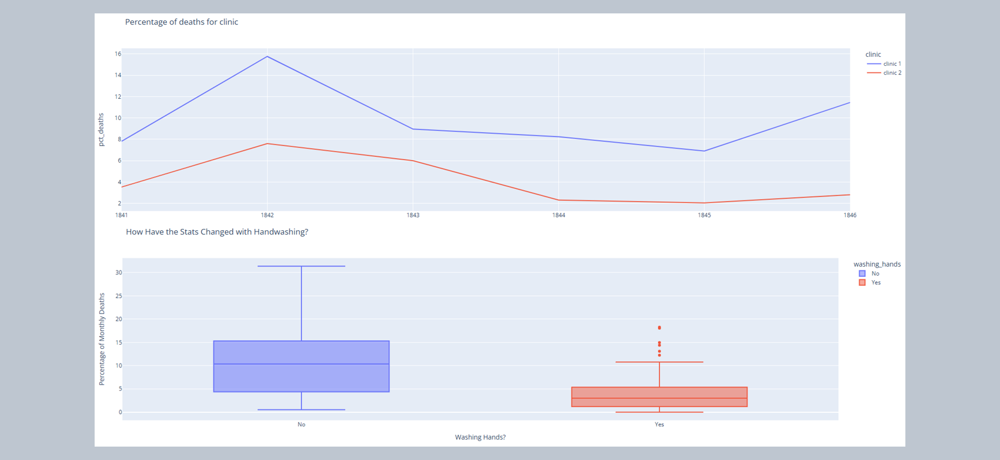

Exploring Dr. Semmelweis's Legacy

This Google Colaboratory notebook explores the historical case of Dr. Ignaz Semmelweis and his groundbreaking discovery regarding childbed fever in Vienna General Hospital during the 1840s. The notebook utilizes Python libraries such as Pandas, Plotly, Seaborn, and Matplotlib to analyze and visualize datasets containing monthly and yearly records of births and deaths in different clinics.
The analysis begins by investigating the overall mortality rate for women giving birth in the 1840s, followed by visualizations comparing the trends of births and deaths over time. Clinic-specific data is examined to identify patterns in mortality rates between different healthcare facilities. Additionally, the notebook delves into the pivotal moment when handwashing was made mandatory in one of the clinics, exploring its impact on reducing mortality rates.
The main focus revolves around demonstrating the significance of Dr. Semmelweis's intervention in promoting hand hygiene to prevent the spread of infections in medical settings. The findings highlight the tangible improvements in patient outcomes following the implementation of handwashing practices, thus underscoring the importance of evidence-based medicine and public health interventions.